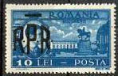

I have had the idea of this page during the work on the page during the work on the page dedicated to the Danube - Black See canal . On that page I presented some recent stamps, showing sometimes huge surcharged values, what brought me to idea to take a more attentive look at surcharged stamps of different periods in the Romanian history, in order to try to understand what provoked their apparition and to make some comparisons.
Let's start with two definitions. Inflation: an abnormal increase in the volume of money and credit resulting in a substantial and continuing rise in the general price level. Deflation: reduction of the volume of the available money or credit resulting in the decline of the general price level (Merriam-Webster Dictionary, 1989).
The August 15, 1947 monetary reform
From August 1944 and a long time after it Romania was occupied by Soviet troops. The Soviet government has pursued on the Romanian territory the same economic policies that is has pursued in its own country and in all countries that it controlled in the Eastern and Central Europe, i.e. the nationalization of the industry, the collectivization of the agriculture and the centralized planning of the whole economy. The result was the increased impoverishment of the population, hunger and also inflation. This inflation was of course reflected on the stamps of that period, the highest value of Lei 50,000 being issued in March 1947 (King Michael, Sc. 664, Mi. 1036).
On August 15, 1947 the Romanian government has deflated the currency, by permitting the exchange of only a limited amount of the old money against the new one. This was its first monetary blow against its declared enemy, the Romanian bourgeoisie. Please see below the stamp with the second highest value, that of Lei 36,000, surcharged with a new value of Lei 2 (plus a surtax of Lei 3 for the games). This stamp, issued on September 6, 1947, commemorated the Balkan Athletic Games in Bucharest, Sc. B368, Mi. 1077 (CBA means, in Romanian language, Campionatele Balcanice de Atletism). The stamp belongs to the Sport on Stamps topic, even if the fact is not self-evident. An attentive philatelic eye will notice a curiosity, a difference in the intensity of colors on the twin stamps shown below.
 |
 |
The then young King Michael had all reasons to look upset, not only because of inflation, but especially because he should had the premonition that only one year later his face on stamps will be overprinted with three bold letters, R.P.R. (Sc 684-694, Mi.1106-1116, one shown) and his crown will be surcharged with a bar. RPR means Romanian Popular Republic.
Monetary reform of January 28, 1952
A period of a relative monetary stability has followed, the highest stamp value being of Lei 100, shown on the Transportation stamp, issued on November 22, 1948, Sc. C34, Mi. 1164. You can see an overprinted version of it below, on the second row, on the right.